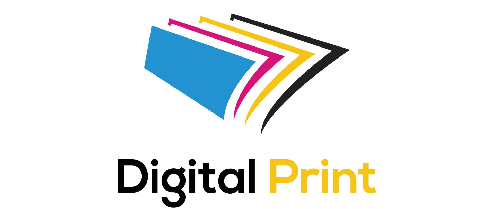

Trabajo Especial de Grado
Sistema de Gestion para Mejorar la eficiencia de la atencion al cliente en la empresa Digital Print

Este trabajo especial de grado tiene como objetivo diseñar y desarrollar un sistema de gestión de clientes (CRM) personalizado para la empresa Digital Print. Actualmente, el proceso de atención y seguimiento de los clientes se realiza de forma manual, lo que genera ineficiencias y posibles pérdidas de información. La solución propuesta busca digitalizar y automatizar estos procesos, mejorando la organización, la productividad y la experiencia del cliente.
📥 Descargar PDF